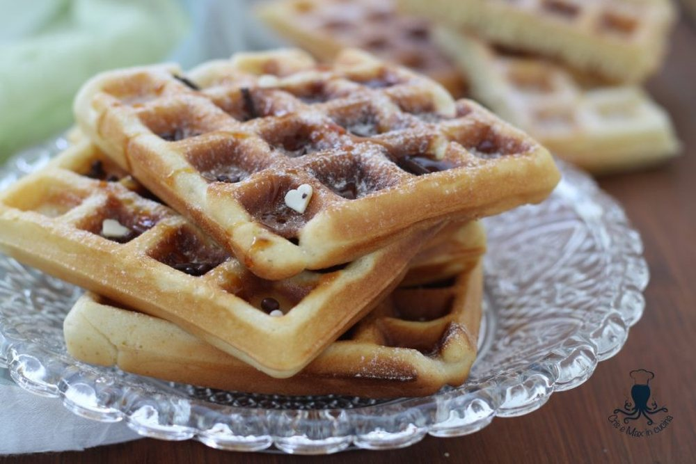

Doces · Outros doces
Waffles com iogurte

Ingredientes
- 1 ¾ xícara de farinha de trigo
- 1 colher (chá) de fermento em pó
- 1 colher (chá) de bicarbonato de sódio
- ½ colher (chá) de sal
- 2 xícaras de iogurte natural ou de leite azedo
- ⅓ xícara de óleo
- 2 ovos
Modo de preparo
- Esquente o aparelho para waffles conforme as instruções do fabricante. Numa tigela, misture a farinha de trigo, o fermento, o bicarbonato e o sal.
- Junte o iogurte, o óleo e os ovos à mistura de farinha e bata até que fiquem bem misturados.
- Despeje parte da massa no centro da parte inferior do aparelho até chegar a 2,5 cm da borda.
- Feche o aparelho e asse conforme as instruções do fabricante, sem nunca abrir durante o cozimento.
- Solte o waffle com cuidado, usando um garfo. Reaqueça o aparelho antes de cozinhar outro waffle. Deixe esfriar e congele.
Observação
Como a massa de waffles não é uma massa líquida para fritura (como a de panqueca), pode ser congelada crua: congele em recipientes rígidos bem vedados e descongele na geladeira de um dia para o outro. Congelamento: coloque os waffles num saco plástico, retire o ar e vede bem; etiquete e congele. Descongelamento: em temperatura ambiente por cerca de 1 hora; aqueça antes de servir.